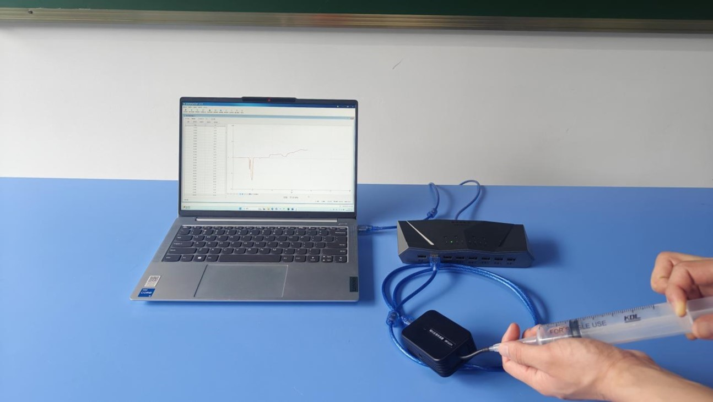
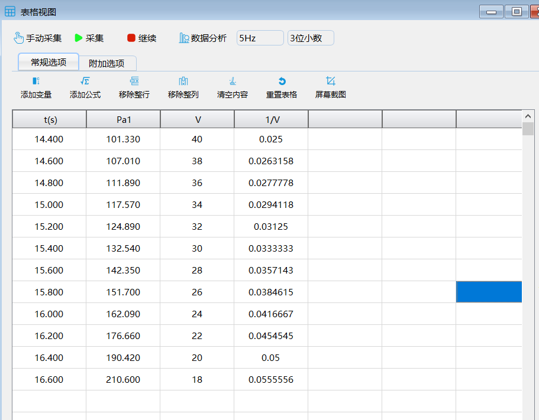
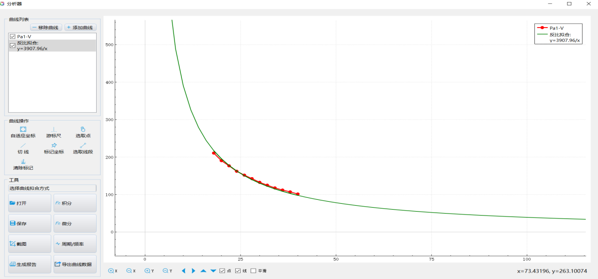
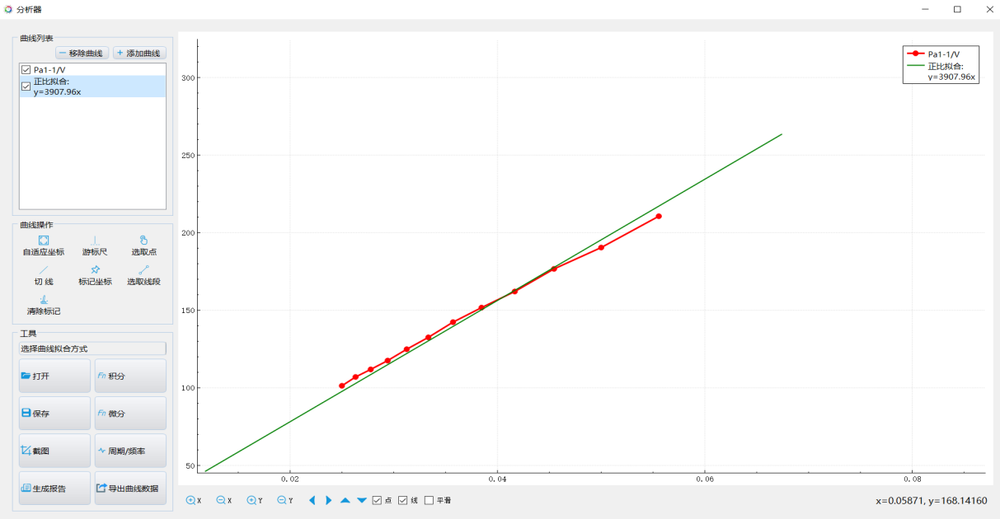

实验四十八 探究等温情况下一定质量气体压强与体积的关系
【实验目的】
通过实验验证波义耳定理，加深对波义耳定理的理解。
【实验原理】
一定质量的气体，在温度不变的情况下，其压强与体积成反比，这就是波意尔定理。在本实验中，我们采用改变注射器活塞的位置来改变注射器内部密封的气体的体积，采用相对压强传感器来测量气体的压强变化。如果实验测得PV＝恒量，或P－1／V图线为过坐标原点的直线，则说明压强与体积成反比关系，定理被验证。
【实验器材】
数据采集器、相对压强传感器、注射器、计算机等。
【实验装置】

【实验操作步骤】
1.搭建好实验环境，将注射器活塞拉至40ml处（初始值可以任意选取），把相对压强传感器与注射器连接；
2.打开实验数据分析软件，连接好数据采集器和相对压强传感器；
3.打开“表格视图”，点击“添加变量”，以“系数递减”的方式添加数据列“V”表示气体体积；点击“添加公式”添加数据列“1/V”表示体积的倒数；
4.将注射器活塞从40ml处开始往里推，每推进2ml时点击一次“手动采集”记录测量数据；
5.记录足够的数据后，点击“暂停”停止实验，点击“数据分析”做出压强和体积的关系曲线；
6.分析压强和体积的关系曲线后，发现其具有明显的双曲线特征，为了验证压强和体积的关系是否是反比关系，通过分析器中的拟合工具，做出图像的反比拟合曲线，观察拟合曲线和数据曲线的吻合度，做出分析；
7.点击“添加曲线”，做出压强与体积倒数的曲线，观察曲线，可发现压强与体积倒数成正比，通过拟合功能进行正比拟合后，发现实验曲线与拟合曲线基本成重合，表明压强与体积的倒数成正比；

实验数据

P-V曲线及反比拟合曲线

P-1/V曲线及正比拟合曲线
【思考与讨论】
总结温度不变的情况下，气体的压强与其体积的关系。